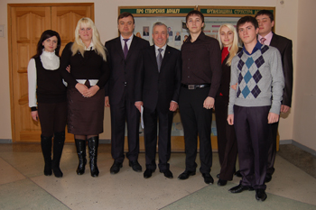
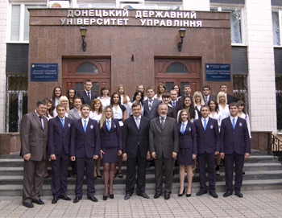
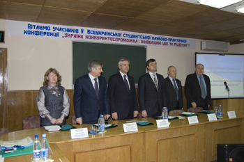

Факультет менеджменту
декан факультету
к.держ.упр., доцент
Сергій Олександрович
ЧЕРНОВ
Факультет менеджменту Донецького державного університету управління готує управлінські кадри для різних сфер економіки та управління. Основне завдання факультету у підготовці фахівців-управлінців - це створення відповідних умов для отримання студентами якісної європейської освіти.
Напрями підготовки фахівців
Факультет здійснює підготовку фахівців на ОКР «бакалавр», ОКР «спеціаліст» та ОКР «магістр» згідно з Ліцензію Міністерства освіти і науки, молоді та спорту України серія АВ 552610 за напрямами
0502 Менеджмент:
6.050200 Менеджмент
7.052001 Менеджмент організацій
8.050201 Менеджмент організацій
8.050206 Менеджмент зовнішньоекономічної діяльності
Структура факультету
До складу факультету менеджменту входять такі кафедри:
Менеджменту у виробничій сфері (завідувач - Поважний Станіслав Федорович, доктор економічних наук, професор, чл.-кор. Академії педагогічних наук України, Заслужений працівник народної освіти України, Почесний громадянин міста Донецька та Донецької облості);
Менеджменту зовнішньоекономічної діяльності (завідувач - Батченко Людмила Вікторівна, доктор економічних наук, професор, академік Академії економічних наук України);
Екологічного менеджменту (завідувач - Марова Світлана Феліксівна, доктор наук з державного управління, доцент).
Вищої математики (завідувач - Шайхет Леонід Юхимович, доктор фізико-математичних наук, професор).
Кафедра іноземних мов (завідувач - Личко Лідія Яківна, кандидат педагогічних наук, доцент)

Основні напрями діяльності
Навчання студентів факультету здійснюється з використанням сучасних науково обґрунтованих методів активного здобуття знань, розвитку творчих здібностей, фізичного і духовного вдосконалення і спрямоване на прищеплення прагнення до постійного оновлення знань протягом життя.
Студенти факультету постійно мають змогу спілкуватися з керівниками Донецька та Донецької області на предмет стратегічного розвитку регіону, процесів реформування економіки, освіти, молодіжної політики.
Особлива увага на факультеті приділяється практичній спрямованності підготовки студентів, яким треба знайти місце на ринку праці, бути конкурентоспроможними, мати необхідні лідерські здібності. Для підготовки висококваліфікованих спеціалістів в сфері управління зовнішньоекономічної діяльності в умовах європейської інтеграції на кафедрі менеджменту зовнішньоекономічної діяльності з 01.09.2010 навчання ведеться виключно англійською мовою.
Регулярно захист дипломних та випускних робіт проходить на провідних підприємствах Донецької області: ВАТ «ММК ім. Ілліча», ВАТ «Донецьксталь», Торговельно-промислова палата в м. Донецьку та інші.

Кафедри факультету активно співпрацюють з роботодавцями, як результат такої співпраці випускники факультету працюють керівниками і головними спеціалістами підприємств, фірм та організацій різних форм власності у виробничому секторі, митних структурах, страхових компаніях, торговельних комплексах та об'єднаннях, консалтингових фірмах, інформаційних та рекламних агентствах, туристичних агентствах, займають керівні посади в обласній державній адміністрації, державних управліннях екології та природних ресурсів, виконавчих органах влади в містах та районах області.

Виконує факультет і значний обсяг науково-дослідної роботи, працюючи над держбюджетними та госпдоговірними темами.
Постійною практикою стало на кафедрах факультету проведення щорічних міжнародних та всеукраїнських конференцій:
«Розвиток міжнародних економічних відносин та зовнішньоекономічної діяльності в контексті інтеграційних та глобалізаційних процесів»;
"Менеджмент ХХІ століття: еволюційне та революційне";
Кафедра менеджменту зовнішньоекономічної діяльності щорічно приймає II етап Всеукраїнської олімпіади з проблематики кафедри.
Студенти факультету беруть активну участь у науково-дослідній роботі та міжнародних студентських обмінах з європейськими вищими навчальними закладами: Сілезьський університет (Чехія), Вища школа бізнесу та Академія ім. Козьмінського (Польша). Завдяки отриманим навичкам та знанням перемагають на конкурсах студентських наукових робіт, всеукраїнських олімпіадах.
Гуртожитки факультету є переможцями та призерами обласних конкурсів - оглядів серед гуртожитків вищих навчальних закладів.